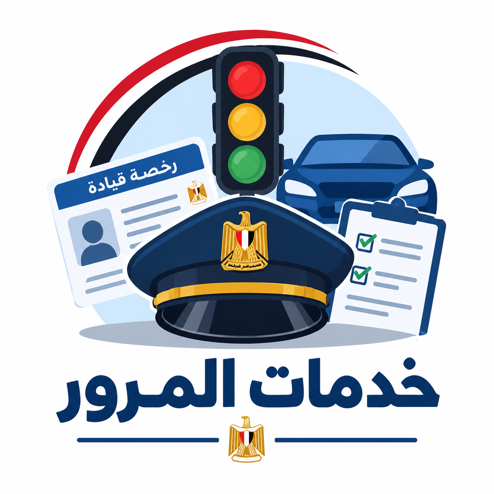
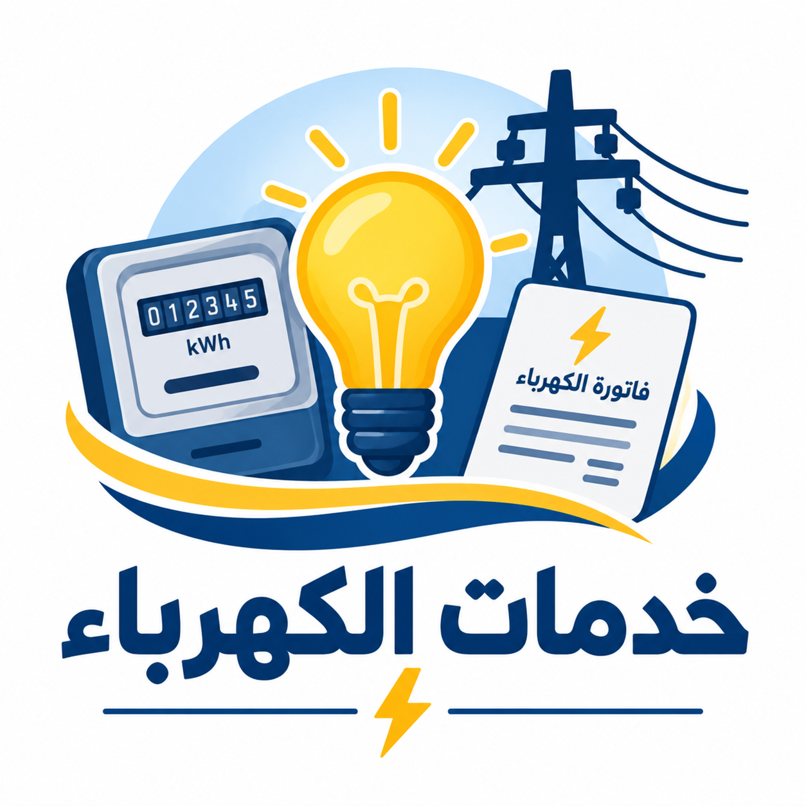

Citizen Services
Ration Services
Learn about ration services and important digital services related to ration cards.
Learn More
Traffic Services
Learn about vehicle services, driving licenses, and traffic violation inquiries.
Learn More
Electricity Services
Learn about electricity bills, meters, complaints, and digital services.
Learn More
Water Services
Learn about water bills, meter readings, complaints, and wastewater services.
Learn More